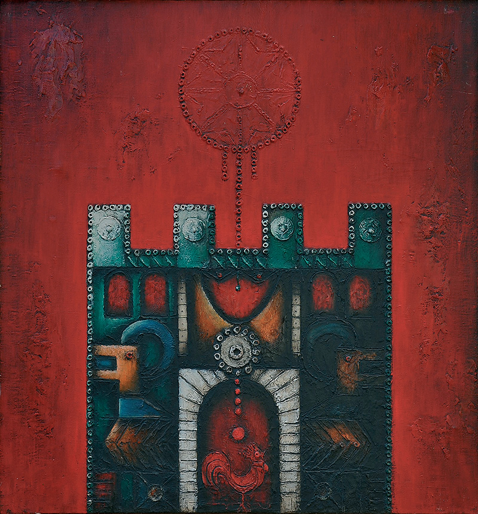

Jeta në Kosovë dikur dhe sot
Kultura - pasuri kombëtare
?
A mendoni se Kosova ka një kulturë të zhvilluar?
Pse?
Bëni edhe ju një hulumtim për sporte të tjera dhe zhanret e tjera të muzikës.
Shkruani emra të njohur të këtyre fushave, nga fshati ose qyteti ku jetoni.

Gjeli, Engjëll Berisha, 1996.